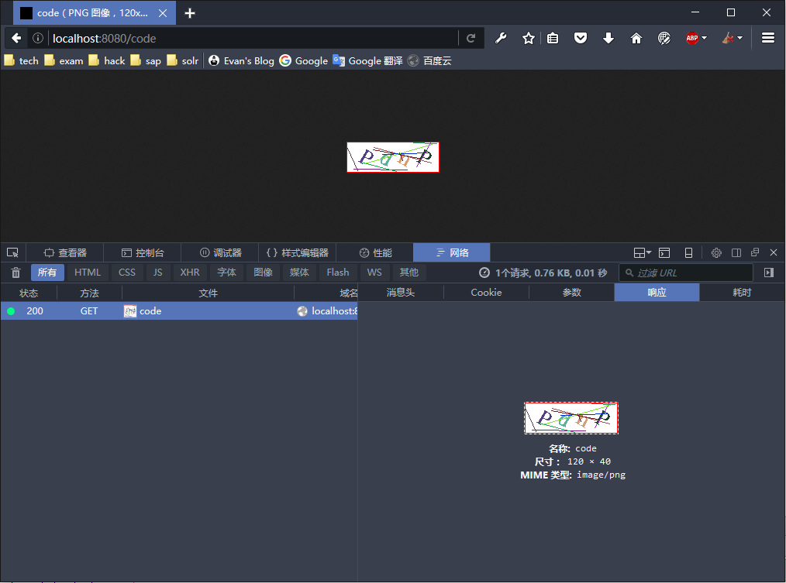

图片验证码的java简单实现代码

图片验证码主要的功能是为了阻止循环请求避免暴力破解的手段之一，当然还有很多类型的验证请求，如google验证码、12306变态选图片或者拖动式。上述截图是一种基本的4位数字字母组合图片验证码方式，包含了横线竖线、字体旋转的干扰方式。实现方式很简单，这里只用一个servlet实现，直接贴代码，如下：
package com.wangjunneil.servlet;
import javax.imageio.ImageIO;
import javax.servlet.ServletException;
import javax.servlet.http.HttpServlet;
import javax.servlet.http.HttpServletRequest;
import javax.servlet.http.HttpServletResponse;
import java.awt.*;
import java.awt.image.BufferedImage;
import java.io.IOException;
import java.util.Random;
public class ImgCodeServlet extends HttpServlet {
@Override
public void doGet(HttpServletRequest req, HttpServletResponse resp) throws ServletException, IOException {
// 定义图片验证码的宽度和高度
int width = 120;
int height = 40;
// 设置干扰线条数
int lineCount = 10;
// 创建图片缓冲区对象
BufferedImage image = new BufferedImage(width, height, BufferedImage.TYPE_INT_RGB);
Graphics2D g = (Graphics2D) image.getGraphics();
// 设置背景色为白色
g.setColor(Color.white);
g.fillRect(0, 0, width, height);
// 设置验证码图片边框颜色
g.setColor(Color.RED);
g.drawRect(0, 0, width - 1, height - 1);
// 图片写入内容定义
String data = "1234567890abcdefghijklmnopqrstuvwxyzABCDEFGHIJKLMNOPQRSTUVWXYZ";
Random r = new Random();
int x = 14; // 定义第一个字符的x坐标
for (int i = 0; i < 4; i++) {
// 获取随机内容字符
char ch = data.charAt(r.nextInt(data.length()));
// 设置字体样式
g.setFont(new Font("宋体", Font.BOLD, 28));
g.setColor(new Color(r.nextInt(255), r.nextInt(255), r.nextInt(255)));
// 设置字符旋转
int k = r.nextInt(90);
double rad = (90 - 60) * Math.PI / 180;
g.rotate(rad, x, 25);
// 内容字符写到缓冲区
g.drawString(Character.toString(ch), x, 25);
// 旋转复原
g.rotate(-rad, x, 25);
// 下一个字符x坐标
x = x + 25;
}
// 设置干扰线
for (int i = 0; i < lineCount; i++) {
g.setColor(new Color(r.nextInt(255), r.nextInt(255), r.nextInt(255)));
g.drawLine(r.nextInt(width), r.nextInt(height), r.nextInt(width), r.nextInt(height));
}
// 输出到浏览器中
ImageIO.write(image, "png", resp.getOutputStream());
}
}
注意这里只是测试图片验证码的显示，并没有把生成的字符组合放入session中，实际生产时应该放入session，在处理登陆请求时取出进行验证。